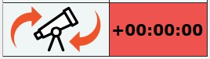

Due to the nature of daytime imaging and the likelihood of less precise telescope alignment (compared to nighttime multi-star alignment), there is a high probability that your telescope may miss the imaging target after a meridian flip. This is especially true when working with high magnification setups for imaging and guiding.
To reduce pointing errors after a meridian flip, it is still recommended to perform a star sync at the beginning of the session. After framing your target near the center of the main imaging scope's field of view, perform a star sync to confirm that the telescope is accurately aligned with the intended celestial target. If you are using a separate guide scope with its own guiding camera, ensure that the guide scope is aligned so the target is properly visible in PHD2 for guiding. Star syncing minimizes alignment errors and reduces adjustment times following a meridian flip.
HelioMaker provides a Meridian Flip Timer on its main screen showing the estimated time before a meridian flip or the time elapsed since the last flip. While this tool is only an approximate indicator, it helps users prepare for and take action during and after a meridian flip. In some cases, users may need to manually monitor the meridian flip process to avoid issues such as cable snags or physical collisions between telescope parts and the pier. When possible, it is recommended to define safety limits in the mount software or controller as a best practice.

After a meridian flip, the target may be placed out of the camera's field of view. Use the following methods to locate the target before fine-tuning its framing:
Once the target is found, fine-tune its framing using these steps:
For full solar or lunar disk imaging, the process is simpler: once the disk is located, manually center it within the frame.
If guiding stops working after a meridian flip, this issue may be related to how your mount handles the declination motor's direction after the flip. According to the PHD2 documentation, a setting in the PHD2 Advanced Settings dialog (accessible from PHD2, not HelioMaker) determines how PHD2 adjusts the calibration data to handle meridian flips.
The setting "Reverse Dec output after meridian flip" tells PHD2 whether to automatically reverse the direction of the declination motor based on the mount's side-of-pier state. Here's what you need to know:
If changing the state of the "Reverse Dec output after meridian flip" setting does not resolve the issue, it is advised to repeat the PHD2 calibration process after performing a meridian flip. This is because some mounts may experience shifts in balance or other mechanical changes that affect guiding accuracy.
To recalibrate PHD2 after a meridian flip:
For additional information, consult the PHD2 Advanced Settings or visit the PHD2 user forums and related astrophotography resources.